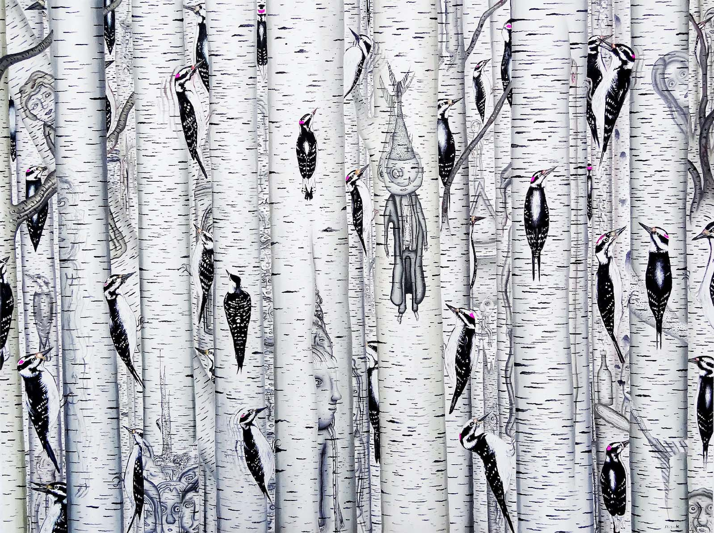

Look - 4



A story of survival. This collection represents a journey driven by passsion, hope and transformation. Inspired by personal loss, it’s meant to evoke emotion for the viewer and confidence for the wearer. Through use of original digital prints, dramatic sihlouettes, and bold color, this collection leads you through the dark trees and into a vibrant open field; into freedom.